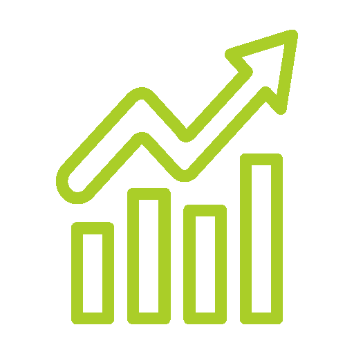
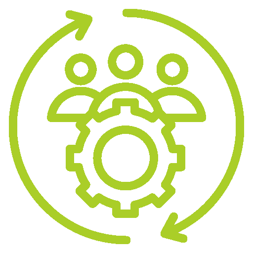

기업 사회공헌
국내 제일의 CSR 운영 노하우를 통해 파트너십 기업의 사회적 책임을 실현합니다.

신청절차
벤처기업가와 벤처자본이 만든 '아이들과미래재단' 은 다양한 파트너십의 노하우를 가지고 있으며, 아래와 같은 과정으로 진행됩니다.
사업제안
기업에서 아이들과미래재단에 CSR 문의
사업계획 수립/제안
사업 콘셉트 도출 / 포지셔닝 전략 수립 / 수혜대상, 세부프로그램 제안
수혜기관, 대상자
또는 봉사자 모집
기관, 수혜대상자 모집 공고 / 서류,현장심사 / 봉사단 모집 선발(해당 시)
사업결과 보고/평가
사업결과보고, 회계보고 / 사업평가, 피드백 분석 / 차기년도 사업방향 수립 / 파트너십 지속적 점검 및 유지
사업검토/환경분석
사업적합성, 현실성 조사 / 기업의 목표, 니즈 파악 / 사업 목적과 목표 설정 / 사업계획서 작성
사업협약
전략적 제휴를 위한 협약 / 사업비 지원
사업진행
기관과 사업협약(해당 시) / 세부운영계획 수립(프로그램, 자원봉사) / 오리엔테이션 진행 / 프로그램 진행(중간보고, 모니터링)
운영전략
아이들과미래재단은 기업의 사회공헌활동에 특화된 성과를 보여 왔습니다. 우리는
4가지 운영전략을 바탕으로 기업과의 사회공헌 활동에 임하고 있습니다.
-
대등한 협력관계
주는 사람과 받는 사람의 관계가 아니라 “파트너”관계로써 서로의 성공과 협력을 전제로 합니다.
-
물질 지원을 초월한 파트너십
기부자는 현금은 물론 인적자산과 전문성, 기술을 지원합니다. 또한, 파트너간의 개인적, 조직적 헌신도 함께 요구됩니다.
-
성과에 대한 책임
아이들과미래재단은 자선에 그치지 않고, 근본적인 문제 해결에 주안점을 두고 있습니다. 우리는 전략적 계획에 근거해 사업을 실행하고, 비용과 노력의 투자에 따른 성과를 예상할 수 있도록 시스템 개선에 앞장섭니다.
 -
지속성
일시적인 지원에 돈과 시간을 들이지 않습니다. 우리 아동과 청소년 삶의 변화를 이끌어내기 위해 우리는 지속가능한 경영관리를 통해 효율적 조직과 사업을 운영합니다.

아이들과미래재단이 지향하는 파트너십
정부·기업·NPO가 각 부분의 자원과 전문성을 활용하여 합의된 공동목표를 달성하기 위해 협력 관계를 유지하는 것을 말합니다.
공동의 과제를 수행하기 위해 책임과 위험, 이익을 분담합니다.
원활한 의사소통과 정보공유를 위해 상호간의 배려와 존중이 바탕이 돼야 합니다.
필요할 경우 협의를 거쳐 합의사항을 개정할 수 있습니다. 신뢰와 열정을 기반으로 정기적으로 파트너십을 점검합니다.